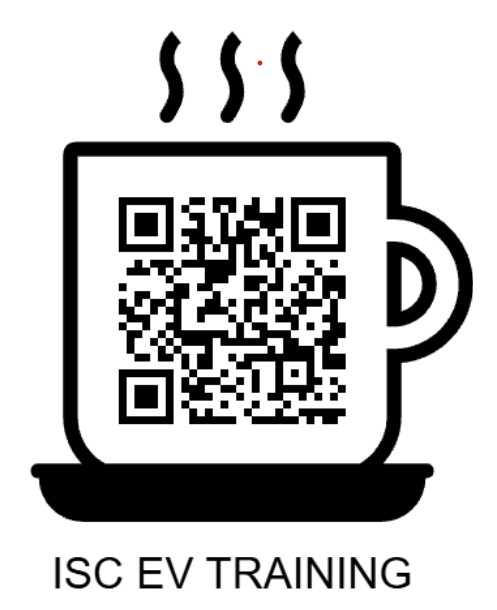

Pilih Modul Pembelajaran
Silakan pilih salah satu modul interaktif di bawah ini, atau scan QR code di samping untuk langsung membagikan halaman utama ini ke perangkat peserta.

Scan untuk Buka di HP
Akses cepat materi pelatihan
Informasi Wi-Fi
Pre-Test & Post-Test Pelatihan
Kerjakan pre-test sebelum memulai modul dan post-test setelah menyelesaikan pembelajaran untuk mengukur pemahaman Anda.
Download Votol Software & Driver PL2303
Paket arsip: VotolApp+DriverPL2303.rar — ekstrak terlebih dahulu sebelum menjalankan file installer di dalamnya.
1. EM_V3-40 (EM-2 series products).exe
Aplikasi utama di PC/laptop untuk melakukan konfigurasi, pengaturan parameter (seperti batas arus, kecepatan/RPM, throttle, dan regenerative braking), serta memantau status kerja controller Votol seri EM-2 secara langsung.
2. PL2303_Prolific_DriverInstaller_v110(2).exe
Installer driver USB-to-Serial untuk chip Prolific PL2303. Instal file ini terlebih dahulu agar sistem operasi Windows dapat mengenali kabel koneksi/USB-TTL dan menyediakan port COM saat menghubungkan laptop ke controller Votol.
Sejarah Kendaraan Listrik Dunia
Menelusuri perkembangan kendaraan listrik secara global dari era awal penemuan baterai dan motor listrik pada abad ke-19, masa kejayaan dan penurunan, hingga kebangkitan modernnya.
Sejarah Kendaraan Listrik di Indonesia
Mempelajari perjalanan riset, pengembangan prototipe, ekosistem industri, hingga kebijakan transisi energi dan adopsi kendaraan listrik di Indonesia.
Personal Transporter
Mengenal jenis, prinsip kerja, dan karakteristik mobilitas mikro elektrik seperti skuter listrik dan personal transporter sebelum masuk ke sistem kendaraan listrik roda dua.
Keselamatan & Kesehatan Kerja (K3)
Memahami standar keselamatan kerja, penggunaan Alat Pelindung Diri (APD), pencegahan bahaya listrik tegangan tinggi dan baterai lithium, serta prosedur darurat saat praktik.
Dasar Elektronika
Halaman web interaktif ini adalah media belajar dasar elektronika yang mencakup materi rangkaian tertutup, penggunaan multimeter, resistor, LED, pembagi tegangan, hingga kapasitor melalui simulasi digital.
Baterai Kendaraan R2
Halaman web interaktif ini adalah media belajar mendalam mengenai komponen baterai motor listrik roda dua (R2), mulai dari pemahaman besaran dasar, karakteristik jenis kimia sel, konfigurasi seri-paralel, simulasi sistem proteksi BMS, hingga penjelasan berbagai salah kaprah seputar baterai lithium.
Motor BLDC & Hub Motor R2
Halaman web interaktif ini adalah media belajar mendalam mengenai prinsip kerja motor listrik jenis Brushless DC (BLDC) dan motor hub roda dua (R2), mulai dari konsep dasar elektromagnetisme, domain magnetik, gaya, torsi, back-EMF, animasi komutasi kumparan dan sensor Hall, kurva karakteristik kinerja, hingga pemahaman mendalam seputar peranan kontroler dan berbagai salah kaprah populer di masyarakat.
Komponen EV Roda Dua
Mengenal berbagai komponen utama dan pendukung pada kendaraan listrik roda dua beserta fungsi, letak, serta keterhubungannya dalam satu sistem kelistrikan yang terintegrasi.
Smart Kit Simulator
Simulasi kendaraan roda dua dengan Smart Kit Simulator untuk menguji pemahaman sistem penggerak dan kontrol secara menyeluruh.
Controller Kendaraan Listrik R2
Mempelajari fungsi dan cara kerja motor controller pada kendaraan listrik roda dua, mulai dari pengaturan arus, PWM/FOC, sinyal throttle & sensor Hall, hingga fitur proteksi dan mode berkendara.